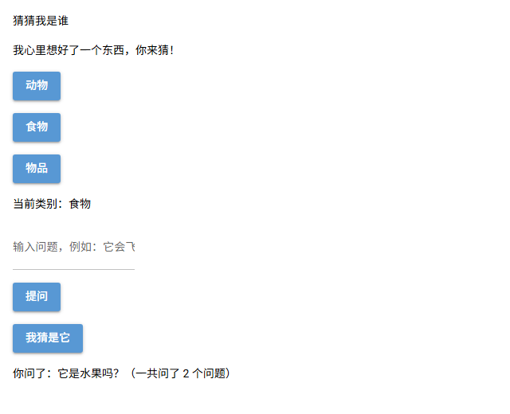
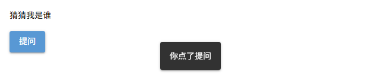
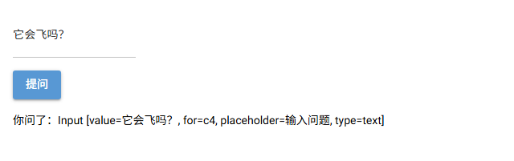
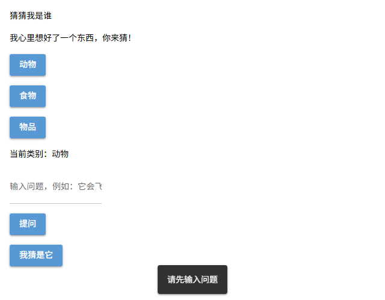
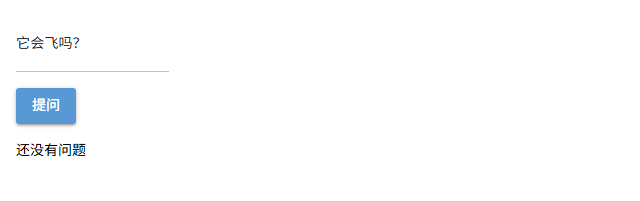

第 2 课任务
上一课，guess_who.py 已经有了标题、类别按钮和输入框，但点击按钮没有任何反应。这一课让它们工作起来：点类别按钮，显示当前类别；输入问题后点"提问"，程序读出问题并显示出来，同时统计已经问了几个问题。

本课完成后：点了"食物"，又问了两个问题（真实运行截图）
| 步骤 | 做什么 | 新学的代码 |
|---|---|---|
| 第 1 步 | 点"提问"弹出提示 | on_click=、ui.notify |
| 第 2 步 | 读出输入框里的问题 | box.value |
| 第 3 步 | 把问题显示在网页上 | result.text |
| 第 4 步 | 类别按钮显示当前类别 | 事件参数 e.sender |
| 第 5 步 | 排错 | 常见错误 |
第 1 步 · 点击按钮，执行函数
on_click：点击事件用户在网页上的操作（点击、输入等）叫事件（event）。给按钮加上 on_click=函数名，按钮被点击时，NiceGUI 就会执行这个函数。
| 代码 | 作用 | 英文意思 |
|---|---|---|
ui.button("提问", on_click=ask) | 点击按钮时执行函数 ask | on click = 在点击时 |
ui.notify("文字") | 在网页下方弹出一条提示，几秒后自动消失 | notify = 通知 |
先在 guess_who.py 里试一个最简单的版本（新加的部分用红字标出）：
from nicegui import ui
def ask():
ui.notify("你点了提问")
ui.label("猜猜我是谁")
ui.button("提问", on_click=ask)
ui.run()
点击"提问"后，下方弹出提示
难点：on_click=ask 后面不加括号
ask 是把函数交给按钮，等点击时再执行；ask() 是马上执行这个函数。例子：写成 on_click=ask()，网页一打开就弹出"你点了提问"，之后再点按钮，什么都不会发生。
Q1小明把函数写在了按钮的下面，运行后会怎样？
from nicegui import ui
ui.label("猜猜我是谁")
ui.button("提问", on_click=ask)
def ask():
ui.notify("你点了提问")
ui.run()第 2 步 · 读出输入框里的内容
要读出输入框里的文字，先把输入框存进一个变量，再用 .value 读取它的内容。
| 代码 | 作用 | 英文意思 |
|---|---|---|
box = ui.input(...) | 创建输入框，并存进变量 box | |
box.value | 输入框里现在的文字（字符串） | value = 值 |
def ask():
ui.notify(f"你问了：{box.value}")
box = ui.input(placeholder="输入问题，例如：它会飞吗？")
ui.button("提问", on_click=ask)输入"它会飞吗？"再点"提问"，下方弹出"你问了：它会飞吗？"。
难点：box 和 box.value 不一样
box 是整个输入框组件，box.value 才是框里的文字。例子：如果写成 f"你问了：{box}"，网页上会显示一串组件信息，而不是问题：

Q2函数 ask 写在输入框的上面，里面却用到了下面才定义的 box。为什么不报错？
def ask():
ui.notify(f"你问了：{box.value}")
box = ui.input(placeholder="输入问题，例如：它会飞吗？")
ui.button("提问", on_click=ask)第 3 步 · 把问题显示在网页上
弹出提示几秒就消失了。更好的做法是放一个文本组件，点击后修改它的文字。
| 代码 | 作用 |
|---|---|
result = ui.label("") | 创建一个空的文本组件，存进变量 result |
result.text = "新文字" | 修改文本组件显示的文字，网页立刻更新 |
box.value = "" | 清空输入框 |
questions = []
def ask():
q = box.value
if q == "":
ui.notify("请先输入问题")
else:
questions.append(q)
result.text = f"你问了：{q}（一共问了 {len(questions)} 个问题）"
box.value = ""
box = ui.input(placeholder="输入问题，例如：它会飞吗？")
ui.button("提问", on_click=ask)
result = ui.label("")每问一个问题，就存进列表 questions，用 len 统计个数。输入框是空的就提示，不记录：

没输入就点"提问"，弹出"请先输入问题"
Q3按顺序做了下面 4 件事，最后网页上 result 显示什么？
Q4动手写：仿照 ask，写一个函数 guess，交给"我猜是它"按钮。
要求：输入框为空时弹出"请先输入你猜的东西"；否则 result 显示"你猜的是：（输入的内容）"，并清空输入框。
参考答案
def guess():
g = box.value
if g == "":
ui.notify("请先输入你猜的东西")
else:
result.text = f"你猜的是：{g}"
box.value = ""
ui.button("我猜是它", on_click=guess)别忘了 def guess 要写在 ui.button("我猜是它", ...) 的上面。
第 4 步 · 类别按钮
三个类别按钮是用循环生成的，它们可以共用同一个函数。函数加一个参数 e，NiceGUI 会把这次点击的信息传进来。
| 代码 | 作用 | 英文意思 |
|---|---|---|
def choose(e): | e 是事件参数，装着这次点击的信息 | e = event 事件 |
e.sender | 被点击的那个按钮 | sender = 发出者 |
e.sender.text | 那个按钮上的文字，例如"食物" |
def choose(e):
category.text = f"当前类别：{e.sender.text}"
categories = ["动物", "食物", "物品"]
for c in categories:
ui.button(c, on_click=choose)
category = ui.label("当前类别：动物")难点：一个函数怎么知道点的是哪个按钮？
三个按钮交给的是同一个 choose，但每次点击传进来的 e 不同：点"食物"时，e.sender 就是"食物"按钮，e.sender.text 就是 "食物"。所以 category 显示"当前类别：食物"。
到这里，本课的完整代码已经写好了：
from nicegui import ui
questions = []
def choose(e):
category.text = f"当前类别：{e.sender.text}"
def ask():
q = box.value
if q == "":
ui.notify("请先输入问题")
else:
questions.append(q)
result.text = f"你问了：{q}（一共问了 {len(questions)} 个问题）"
box.value = ""
def guess():
g = box.value
if g == "":
ui.notify("请先输入你猜的东西")
else:
result.text = f"你猜的是：{g}"
box.value = ""
ui.label("猜猜我是谁")
ui.label("我心里想好了一个东西，你来猜！")
categories = ["动物", "食物", "物品"]
for c in categories:
ui.button(c, on_click=choose)
category = ui.label("当前类别：动物")
box = ui.input(placeholder="输入问题，例如：它会飞吗？")
ui.button("提问", on_click=ask)
ui.button("我猜是它", on_click=guess)
result = ui.label("")
ui.run()Q5如果把 choose 改成下面这样，点"物品"按钮后，category 显示什么？
def choose(e):
category.text = f"你选了 {e.sender.text}，共有 {len(categories)} 个类别"第 5 步 · 排错
Q6输入问题后点"提问"，网页上一直显示"还没有问题"，终端也没有报错。问题出在哪里？
def ask():
result.value = f"你问了：{box.value}"
box = ui.input(placeholder="输入问题")
ui.button("提问", on_click=ask)
result = ui.label("还没有问题")
第 5 步 · 排错
Q7点"提问"后网页没变化，终端出现了下面的报错。应该怎么改？
1 from nicegui import ui
2
3 def ask():
4 result.text = f"你问了：{box.text}"
5
6 box = ui.input(placeholder="输入问题")
7 ui.button("提问", on_click=ask)
8 result = ui.label("还没有问题") File "guess_who.py", line 4, in ask
result.text = f"你问了：{box.text}"
^^^^^^^^
AttributeError: 'Input' object has no attribute 'text'🎉
按钮都能响应点击了。选择题一次答对 0 / 0。
| 代码 | 作用 |
|---|---|
ui.button("...", on_click=函数名) | 点击时执行函数，函数名后不加括号 |
ui.notify("...") | 弹出提示 |
box = ui.input(...) / box.value | 把组件存进变量 / 读输入框内容 |
result.text = "..." | 修改文本组件的文字 |
def choose(e): / e.sender | 事件参数 / 被点击的组件 |
两条规律：函数要定义在用到它的按钮上面；输入框读 .value，文本改 .text。
下一课预告
现在所有组件竖着排成一列，问过的问题也只显示最后一个。第 3 课学排版：把按钮排成一行，加上卡片和聊天气泡，让每个问题都留在聊天记录里。